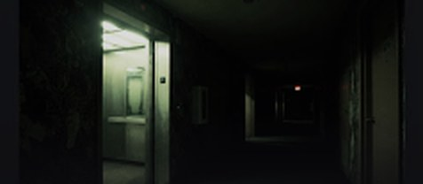

그 집의 전 주인이 왜 침실 옷장 문을 전부 안쪽에서 못질해 두었는지, 이사 첫날엔 그저 낡은 집의 하자라고만 생각했다.
사건이 시작된 건 이사 후 닷새째 되던 새벽 3시 17분이었다.
욕실 환풍기 쪽에서 ‘탁, 탁, 탁’ 하는 아주 메마른 소리가 나기 시작했다. 마치 어린아이의 마른 손톱으로 타일을 긁는 듯한 소리였다. 잠에서 깬 나는 휴대폰 플래시를 켜고 거실을 가로질렀다. 거실 중앙에 세워둔 대형 전신거울 앞을 지나칠 때, 거울 속에 비친 내 그림자의 목이 미세하게 꺾여 있는 것을 보았다.
더 끔찍한 건 그게 아니었다.
거울 속 내 등 뒤 어둠 속에, 전혀 모르는 여자의 젖은 정수리가 바닥에 달라붙은 채 나를 올려다보고 있었다.
“너, 지금 보고 있지?”
귀 바로 뒤에서 축축한 입김과 함께 낮은 속삭임이 울려 퍼졌다. 거울 속 그 여자의 입꼬리가 귀밑까지 찢어지며 반 발짝 내 발등 쪽으로 손을 뻗어왔다.

[현장 첨부 사진] evidence_mirror_0317AM.jpg
새벽 3시 18분 촬영된 거실 거울 하단 왜곡 현상 원본
소름 유발 인증 완료
배경 앰비언스: [심야의 괘종시계와 숨소리.mp3]
독자가 스크롤을 내릴 때 잔잔하게 자동 재생됩니다 (심장박동 주의)
01:42